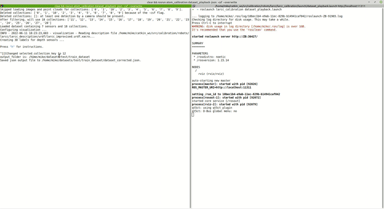

Calibration procedures
- Create a calibration package
- Configure a calibration package
- Set an initial estimate
- Collect data
- Dataset playback
- Calibrate
To calibrate your robot you must define your robotic system, (e.g. <my_robot>). You should also have a system description in the form of an urdf or a xacro file(s). This is normally stored in a ros package named <my_robot>_description. In addition to this, ATOM requires a bagfile with a recording of the data from the sensors you wish to calibrate. This was covered in detail in here.
Transformations in the bagfile (i.e. topics /tf and /tf_static) will be ignored, so that they do not collide with the ones being published by the robot_state_publisher. Thus, if your robotic system contains moving parts, the bagfile should also record the sensor_msgs/JointState message.
Note
It is also possible to use the transformations in the bagfile instead of using the xacro description and the robot state publisher to produce them. See section on using tfs instead of a xacro file.
To reduce the bag size, it may contain compressed images instead of raw images, since ATOM can decompress them while playing back the bagfile. Here is an example of a launch file which records compressed images.
We consider this to be part of the normal configuration of your robotic system in ROS, so ATOM assumes this is already done. In any case if you need inspiration you can take a look at the calibration examples and how we configured our systems.
Create a calibration package
Assuming you have your robotic system setup, you can start creating the calibration package. You should create a calibration ros package specific for your robotic system. ATOM provides a script for this:
rosrun atom_calibration create_calibration_pkg --name <my_robot_calibration>
This will create the ros package
rosrun atom_calibration create_calibration_pkg --name ~/my/path/<my_robot_calibration>
Configure a calibration package
Once your calibration package is created you will have to configure the calibration procedure by editing the
The file contains several comments to provide clues on how to configure it. Here are examples of calibration config.yml files for an autonomous vehicle and for MMTBot, also shown below:
#
# █████╗ ████████╗ ██████╗ ███╗ ███╗
# ██╔══██╗╚══██╔══╝██╔═══██╗████╗ ████║
# ███████║ ██║ ██║ ██║██╔████╔██║
# ██╔══██║ ██║ ██║ ██║██║╚██╔╝██║
# __ ██║ ██║ ██║ ╚██████╔╝██║ ╚═╝ ██║ _
# / _| ╚═╝ ╚═╝ ╚═╝ ╚═════╝ ╚═╝ ╚═╝ | |
# | |_ _ __ __ _ _ __ ___ _____ _____ _ __| | __
# | _| '__/ _` | '_ ` _ \ / _ \ \ /\ / / _ \| '__| |/ /
# | | | | | (_| | | | | | | __/\ V V / (_) | | | <
# |_| |_| \__,_|_| |_| |_|\___| \_/\_/ \___/|_| |_|\_\
# https://github.com/lardemua/atom
# This yaml file describes your calibration!
# You can start by defining your robotic system.
# This is the URDF file (or xacro) that describes your robot.
# Every time a path to a file is requested you can use
#
# - Absolute Path
# Example 1: /home/user/ros_workspace/your_package/urdf/description.urdf.xacro
# Example 2: file://home/user/ros_workspace/your_package/urdf/description.urdf.xacro
#
# - Path Expansion
# Example 1: ${HOME}/user/${YOUR_VARIABLE}/your_package/urdf/description.urdf.xacro
# Example 2: ~/user/ros_workspace/your_package/urdf/description.urdf.xacro
#
# NOTE: It is up to you to guarantee the environment variable exists.
#
# - ROS Package Reference
# Example: package://your_package/urdf/description.urdf.xacro
#
description_file: "package://mmtbot_gazebo/urdf/mmtbot.urdf.xacro"
#description_file: "package://mmtbot_gazebo/urdf/mmtbot.urdf.xacro"
# The calibration framework requires a bagfile to extract the necessary data for the calibration.
bag_file: "$ROS_BAGS/mmtbot/test_depth2.bag"
# You must define a frame of reference for the optimization process.
# It must exist in the transformation chains of all the sensors which are being calibrated.
world_link: "world"
# ATOM will calibrate the extrinsic parameters of your sensors.
# In this section you should discriminate the sensors that will be part of the calibrations.
sensors:
# Each key will define a sensor and its name, which will be use throughout the calibration.
# Each sensor definition must have the following properties:
# link:
# The frame of the sensor's data (i.e. the header.frame_id).
# parent_link:
# The parent link of the transformation (i.e. link) to be calibrated.
# child_link:
# This is the transformation (i.e. link) that we be optimized.
# topic_name:
# Name of the ROS topic that contains the data produced by this sensor.
# If you are calibrating an camera, you should use the raw image produced by the
# sensors. Additionally, it the topic is an image it will automatically use the
# respective `camera_info` topic.
hand_camera:
link: "hand_camera_rgb_optical_frame"
parent_link: "flange"
child_link: "hand_camera_link"
topic_name: "/hand_camera/rgb/image_raw"
throttle: 5
modality: "rgb"
world_camera_rgb:
link: "world_camera_rgb_optical_frame"
parent_link: "world_camera_link"
child_link: "world_camera_rgb_frame"
topic_name: "/world_camera/rgb/image_raw"
modality: "rgb"
lidar:
link: "lidar"
parent_link: "tripod_left_support"
child_link: "lidar_base_link"
topic_name: "/lidar/points"
modality: "lidar3d"
# The calibration requires a detectable pattern.
# This section describes the properties of the calibration pattern used in th calibration.
calibration_pattern:
# The frame id (or link) of the pattern.
# This link/transformation will be optimized.
link: "pattern_link"
# The parent frame id (or link) of the pattern.
# For example, in hand-eye calibration the parent link
# of the pattern can be the end-effector or the base of the arm
parent_link: "world"
# Defines if the pattern link is the same in all collections (i.e. fixed=true),
# or each collection will have its own estimative of the link transformation.
fixed: false
# The type of pattern used for the calibration.
# Supported pattern are: chessboard, charuco
pattern_type: "charuco"
# If the pattern type is "charuco" you need to define
# the aruco dictionary used by the pattern.
# See https://docs.opencv.org/trunk/dc/df7/dictionary_8hpp.html
dictionary: "DICT_5X5_100"
# Mesh file (collada.dae or stl) for showing pattern on rviz. URI or regular path.
mesh_file: "package://mmtbot_gazebo/models/charuco_800x600/charuco_800x600.dae"
# The border width from the edge corner to the pattern physical edge.
# Used for 3D sensors and lidars.
# It can be a scalar (same border in x and y directions), or it can be {'x': ..., 'y': ,,,}
border_size: { "x": 0.04, "y": 0.03 }
# The number of corners the pattern has in the X and Y dimensions.
# Note: The charuco detector uses the number of squares per dimension in its detector.
# Internally we add a +1 to Y and X dimensions to account for that.
# Therefore, the number of corners should be used even for the charuco pattern.
dimension: { "x": 11, "y": 8 }
# The length of the square edge.
size: 0.06
# The length of the charuco inner marker.
inner_size: 0.045
# Miscellaneous configuration
# If your calibration problem is not fully constrained you should anchored one of the sensors.
# This makes it immovable during the optimization.
# This is typically referred to as gauge freedom.
anchored_sensor: "world_camera_rgb"
# Max time delta (in milliseconds) between sensor data messages when creating a collection.
max_duration_between_msgs: 1000
After filling the config.yml file, you should run the package configuration:
rosrun <my_robot_calibration> configure
This will go through a series of verifications to check if the configuration is valid, if the bagfile exists and contains the necessary transformations, among many others. Once the verifications signal a correct calibration configuration, a set of files is automatically created inside your <my_robot>_calibration ros package, as shown below:
├<my_robot>_calibration
├── launch
│ ├── calibrate.launch
│ ├── collect_data.launch
│ ├── dataset_playback.launch
│ ├── playbag.launch
│ └── set_initial_estimate.launch
├── rviz
│ ├── calibrate.rviz
│ ├── collect_data.rviz
│ ├── dataset_playback.rviz
│ └── set_initial_estimate.rviz
├── scripts
│ └── configure
└── urdf
├── initial_estimate.urdf.xacro
├── calibration
│ ├── config.yml
│ └── summary.pdf
The launch directory contains automatically created launch files used to launch each of the calibration stages. The rviz folder contains several rviz configuration files used to launch the visualization of each stage. The urdf folder contains a symbolic link to the xacro file of <my_robot> and, after calibration, will contain a calibrated urdf. Finally, the calibration folder contains the configuration file (config.yml).
This folder also contains an automatically produced schematic of the configuration of the calibration named summary.pdf. It is used to inspect the configuration of the calibration and assess if the configuration is doing what we intended. Atomic transformations to be estimated are marked in blue, sensor coordinate systems, i.e. the coordinate systems in which sensors produce their data are marked in green, and the selected world coordinate frame is highlighted in red.
Recording compressed images
In case the topics from RGB camera(s) are published using the ROS image transport, it is possible to record the compressed image topic instead of the raw image topic as in this example. During the configuration of your calibration package, ATOM will detect that these are compressed topics and automatically generate a decompressing mechanism in the launch files.
The advantage is that you get much smaller bag files since they contain compressed images. This may be critical for large systems such as LARCC, where the data output may reach over 1GB per minute.
Throttling topics
For an offline calibration procedure, speed is not critical. Thus, it is possible to configure a ROS topic throttler for your sensor messages, if they have been recorded in a higher than necessary frequency. For that just add a field throttle to the section of the corresponding sensor in your calibration config.yaml file.
Using a different configuration file
It is also possible to configure your calibration package with a different configuration file, in the case you have multiple configurations with multiple config.yml files. There are also other options to run a custom configuration, i.e.:
usage: rosrun atom_calibration configure_calibration_pkg [-h] -n NAME [-utf] [-cfg CONFIG_FILE]
-h, --help show this help message and exit
-n NAME, --name NAME package name
-cfg CONFIG_FILE, --config_file CONFIG_FILE
Specify if you want to configure the calibration package with a specific configutation file.
If this flag is not given, the standard config.yml ill be used.
Using tfs instead of the xacro file
If you prefer ATOM may use the tra Sometimes it may be preferable to use the transformations in the bagfile instead of the ones produced by the xacro description. To do this use tehe --use_tfs option when configuring your package:
usage: rosrun atom_calibration configure_calibration_pkg [-h] -n NAME [-utf] [-cfg CONFIG_FILE]
-h, --help show this help message and exit
-n NAME, --name NAME package name
-utf, --use_tfs Use transformations in the bag file instead of generating new tfs from the xacro,
joint_state_msgs and robot state publisher.
Set an initial estimate
Iterative optimization methods such as ATOM are sensitive to the initial parameter configuration. ATOM uses several groups of optimization parameters and uses distinct strategies to initialize each class. The most important group, sensor poses, may be manually initialized to ensure that the initial estimate is plausible and thus reduce the likelihood of encountering a local minima.
ATOM provides an interactive framework based on rviz which allows the user to set the pose of the sensors while having immediate visual feedback. The system configures an RViz interactive marker for each sensor to be calibrated, so that it is possible to move the sensor in RViz.
During this procedure one may use several visual clues to better position the sensors, i.e. it is possible to see the CAD model of the sensors and the rest of the structure of the robotic system or one could observe the amount of overlap between sensors.
To set an initial estimate run:
roslaunch <my_robot_calibration> set_initial_estimate.launch
Here are a couple of examples of setting the initial estimate:


Visualizing sensor fustrums
ATOM provides a way to visualize the fustrums of RGB and Depth cameras. These may be useful to get a clue about the overlap between sensors, or the ammount of coverage of a work volume. Below you can see the fustrum of two rgb cameras. One of the cameras is positioned on the end-effector of the manipulator, and when it moves, so does its fustrum.
This functionality is only available in the set initial estimate stage.
Collect data
To run a system calibration, one requires data from the sensors collected at different time instants. We refer to these snapshots of data as collections, and a set of collections as an ATOM dataset.
To collect data, use:
roslaunch <my_robot_calibration> collect_data.launch output_folder:=$ATOM_DATASETS/<your_dataset_folder>
The script launches a fully configured rviz window. The user observes the data playback and decides when a collection should be saved by clicking a green sphere in that appears in the scene.
The number of collections required to accurately calibrate a system vary according to the number, modality and positioning of the sensors. Empirically we found that a figure around 30 collections is usually sufficient for estimating an accurate calibration. That's about the same number of images you need when calibrating a stereo system with OpenCV. Of course this highly depends on your system and the amount of overlap there is between the sensors.
It is also possible to add additional parameters to configure several aspects of the script. See below all the options.
Additional parameters for collect_data.launch
| Argument | Function |
|---|---|
| overwrite | overwrites previous dataset without asking for confirmation |
| bag_rate | Defines the playback rate of the bagfile |
| bag_start | Start time for playback |
| bag_file | Name of bagfile to playback |
| ssl | A string to be evaluated that indicates if a sensor should be labelled. |
One example using all the parameters above:
roslaunch <my_robot_calibration> collect_data.launch output_folder:=$ATOM_DATASETS/<your_dataset_folder> overwrite:=true bag_rate:=0.5 bag_start:=10 ssl:='lambda name: name in ["s1", "s2"]'
When you launch the data collection script, it automatically starts data labeling processes adequate for each sensor in your robotic system. As such, the data is being continuously labeled as the bagfile is played.
Depending on the modalidity of the sensors in the system the labeling may be automatic or fully automatic. Below we detail how each of the labelers operate.
RGB camera labeling
RGB cameras have a fully automatic pattern detection. It uses off the shelf chessboard or charuco calibration pattern detectors. ATOM provides an rviz configuration which subscribes annotated images received from the pattern detectors. You can check if the detection is working by observing the overlays of top of the images.

Use charuco boards
Charuco boards are preferable to chessboard patterns, because of two main reasons: the first is that the charuco detection is more more efficient when compared to the chessboard detection; the second is that the charuco pattern is detected even if it is only partially visible in the image, which is very usefull when the sensors in your system have small overlapping fields of view.
3D Lidar labeling
3D Lidar labeling is a semi-automatic procedure. The idea is that the user moves an rviz marker close to where the pattern is present in the lidar point cloud.

After setting this seed position, the system continues to track the patterns pose over the next frames, even if it moves, as you can see below:

Tracking limitations
The tracking procedure may fail if the pattern is too close to another object, as for example the ground plane. This can be solved by making sure the pattern is sufficiently far from all other objects, or during the dataset playback stage.
Depth camera labeling
The labeling of depth cameras a semi-automatic procedure. It is done by clicking the depth image in rviz. The user should click somewhere inside the pattern, and then the system carries on the tracking of the pattern even if it moves. The user may reset the procedure by reclicking the image.

RViz fork required
Learn about this here.
2D Lidar labeling
The labeling of the 2D Lidars is very similar to the labeling of 3D Lidars. The user sets the seed point where the lidar points are observing the pattern, and then the pattern is tracked.

May be deprecated
The 2D Lidar semi-automatic labeling was last used in 2019, so it may be deprecated. If you are interested on having this functionality create an issue with a request.
Dataset playback
The dataset playback is used to review and eventually correct the automatic labels produced during the collection of data. Ideally, the bulk of the labels produced automatically during the collect data stage should be correct, but a few incorrect annotations will disrupt the calibration. As such, a review of the annotations is recommended. You may skip it if you feel that the automatic labeling went very well.
To run the dataset playback, first launch the visualization:
roslaunch <my_robot_calibration> dataset_playback.launch
and then the dataset_playback node:
clear && rosrun atom_calibration dataset_playback -json <my_dataset_file>.json -ow
This will create a new json file called
usage: dataset_playback [-h] -json JSON_FILE [-csf COLLECTION_SELECTION_FUNCTION] [-ow]
optional arguments:
-h, --help show this help message and exit
-json JSON_FILE, --json_file JSON_FILE
Json file containing input dataset.
-csf COLLECTION_SELECTION_FUNCTION, --collection_selection_function COLLECTION_SELECTION_FUNCTION
A string to be evaluated into a lambda function that receives a collection name as input and returns True or False to indicate if the collection should be loaded (and used in the optimization). The Syntax is
lambda name: f(x), where f(x) is the function in python language. Example: lambda name: int(name) > 5 , to load only collections 6, 7, and onward.
-ow, --overwrite Overwrites the data_corrected.json without asking for permission
Check the video tutorial.

Correcting 3D Lidar labels
Correcting 3D Lidar labels is done by selecting points in the point cloud displayed by RViz and pressing keys in order to add these points as pattern points or boundary points.

Check the video tutorial.
Do not forget to compile your catkin workspace
For selecting points from point clouds, we use an rviz plugin in cpp that must be compiled.
Correcting Depth labels
To correct depth modality labels the user draws a polygon around the pattern in the depth image.
Check the video tutorial.
RViz fork required
Learn about this here.
Calibrate
Finally, a system calibration is called through:
roslaunch <my_robot_calibration> calibrate.launch
Then, in a second terminal, run the calibrate script:
rosrun atom_calibration calibrate -json $ATOM_DATASETS/<my_robot_dataset>/dataset_corrected.json -v -rv -si
There are several options to use in the calibrate script, one common usage is:
rosrun atom_calibration calibrate -json $ATOM_DATASETS/<my_robot_dataset>/dataset_corrected.json -v -rv -si -uic -csf 'lambda x: int(x)< 5' -ssf 'lambda name: name in ["camera_2","camera_3"]'
which would run a calibration in verbose mode (-v), using ros visualization (-rv), showing images (-si), using incomplete collections, using collections with index smaller than 5, considering only sensors camera_2 and camera_3.
You can see all the options listed below:
usage: calibrate [-h] [-vo] -json JSON_FILE [-v] [-rv] [-si] [-oi] [-sr SAMPLE_RESIDUALS] [-ss SAMPLE_SEED]
[-slr SAMPLE_LONGITUDINAL_RESIDUALS] [-ajf] [-oas] [-ap] [-uic] [-ias] [-rpd]
[-nig translation rotation] [-ssf SENSOR_SELECTION_FUNCTION] [-csf COLLECTION_SELECTION_FUNCTION]
[-phased] [-ipg] [-oj OUTPUT_JSON]
optional arguments:
-h, --help show this help message and exit
-vo, --view_optimization
...
-json JSON_FILE, --json_file JSON_FILE
Json file containing input dataset.
-v, --verbose Be verbose
-rv, --ros_visualization
Publish ros visualization markers.
-si, --show_images shows images for each camera
-oi, --optimize_intrinsics
Adds camera instrinsics to the ptimization
-sr SAMPLE_RESIDUALS, --sample_residuals SAMPLE_RESIDUALS
Samples residuals
-ss SAMPLE_SEED, --sample_seed SAMPLE_SEED
Sampling seed
-slr SAMPLE_LONGITUDINAL_RESIDUALS, --sample_longitudinal_residuals SAMPLE_LONGITUDINAL_RESIDUALS
Samples residuals
-ajf, --all_joints_fixed
Assume all joints are fixed and because of that draw a single robot mesh.Overrides automatic
detection of static robot.
-oas, --only_anchored_sensor
Runs optimization only using the anchored sensor and discarding all others.
-ap, --anchor_patterns
Runs optimization without changing the poses of the patterns.
-uic, --use_incomplete_collections
Remove any collection which does not have a detection for all sensors.
-ias, --ignore_anchored_sensor
Ignore the anchored sensor information in the dataset.
-rpd, --remove_partial_detections
Remove detected labels which are only partial.Used or the Charuco.
-nig translation rotation, --noisy_initial_guess translation rotation
Percentage of noise to add to the initial guess atomic transformations set before.
-ssf SENSOR_SELECTION_FUNCTION, --sensor_selection_function SENSOR_SELECTION_FUNCTION
A string to be evaluated into a lambda function that receives a sensor name as input and
returns True or False to indicate if the sensor should be loaded (and used in the
optimization). The Syntax is lambda name: f(x), where f(x) is the function in python
language. Example: lambda name: name in ["left_laser", "frontal_camera"] , to load only
sensors left_laser and frontal_camera
-csf COLLECTION_SELECTION_FUNCTION, --collection_selection_function COLLECTION_SELECTION_FUNCTION
A string to be evaluated into a lambda function that receives a collection name as input and
returns True or False to indicate if the collection should be loaded (and used in the
optimization). The Syntax is lambda name: f(x), where f(x) is the function in python
language. Example: lambda name: int(name) > 5 , to load only collections 6, 7, and onward.
-phased, --phased_execution
Stay in a loop before calling optimization, and in another after calling the optimization.
Good for debugging.
-ipg, --initial_pose_ghost
Draw a ghost mesh with the systems initial pose. Good for debugging.
-oj OUTPUT_JSON, --output_json OUTPUT_JSON
Full path to output json file.
If you use the --verbose option, the script will periodically print a table containing information about the errors per sensor and per collection, e.g.:
Errors per collection (anchored sensor, max error per sensor, not detected as "---")
+------------+----------+----------+----------+----------------+---------+---------+---------+
| Collection | camera_2 | camera_3 | camera_4 | depth_camera_1 | lidar_1 | lidar_2 | lidar_3 |
+------------+----------+----------+----------+----------------+---------+---------+---------+
| 11 | 191.1838 | --- | 0.3000 | 0.1321 | 0.2606 | 0.1153 | 1.4850 |
| 12 | 194.3039 | 98.7729 | 0.4031 | 0.1591 | 0.1043 | 0.0924 | 0.5050 |
| 13 | --- | 94.6346 | 0.3795 | 0.1942 | 0.1657 | 0.1191 | 0.4210 |
| 14 | 199.6314 | --- | 0.4001 | 0.1569 | 0.1897 | 0.0685 | 0.7067 |
| 15 | 199.8989 | --- | 0.5995 | 0.1561 | 0.1956 | 0.0670 | 0.7074 |
| 16 | --- | 146.3350 | 0.2370 | 0.1516 | 0.4412 | 0.1316 | 0.3175 |
| 17 | --- | 150.6509 | 0.2204 | 0.1924 | 0.1747 | 0.0298 | 0.4698 |
| 18 | 202.8877 | --- | 0.5371 | 0.0978 | 0.2200 | 0.1526 | 0.8007 |
| 19 | 211.7066 | 133.3410 | 0.3598 | 0.2179 | 0.0909 | 0.0367 | 0.6065 |
| 20 | 213.7645 | --- | 0.5272 | 0.2152 | 0.2647 | 0.2008 | 0.7670 |
| 21 | 212.6482 | --- | 0.6358 | 0.2444 | 0.3512 | 0.0518 | 1.7215 |
| 22 | 212.3743 | --- | 0.5967 | 0.2321 | 0.3342 | 0.0591 | 0.7347 |
| 23 | 209.1305 | --- | 0.4488 | 0.1161 | 0.1601 | 0.0431 | 0.7198 |
| 24 | 201.1378 | 139.1949 | 0.2539 | 0.1802 | 0.1114 | 0.0517 | 0.5524 |
| 25 | --- | 139.2066 | 0.2994 | 0.0869 | 0.4260 | 0.1768 | 0.1162 |
| 26 | 209.7005 | --- | 0.4192 | 0.1315 | 0.1400 | 0.0443 | 0.6932 |
| 27 | 210.5517 | --- | 0.4042 | 0.2189 | 0.2926 | 0.0495 | 0.7068 |
| 28 | --- | 142.4085 | 0.2628 | 0.1500 | 0.2662 | 0.1419 | 0.3405 |
| Averages | 205.3015 | 130.5680 | 0.4047 | 0.1685 | 0.2327 | 0.0907 | 0.6873 |
+------------+----------+----------+----------+----------------+---------+---------+---------+
Here's an example of a system being calibrated.
Calibrating intrinsic parameters
ATOM also supports intrinsic camera calibration (for now just RGB modality), but requires a first guess for these parameters.
We compute a first guess using the ROS monocular camera calibration for rgb cameras, and the depth camera intrinsic calibration for depth cameras. After these calibrations are carried out, the sensor drivers publish calibrated camera_info messages which are saved to the bag files that is used for calibration, and then used a as first guess for ATOM's intrinsic parameter estimation. Intrinsic calibration runs simultaneous with the extrinsic calibration.
Two stage calibration for robotic systems with an anchored sensor
When one sensor is set to be anchored in the calibration/config.yml file, i.e. this file for the AtlaCar2, we recommend a two stage procedure to achieve a more accurate calibration:
First, run a calibration using parameter --only_anchored_sensor (-oas) which will exclude from the optimization all sensors which are not the anchored one. This optimization will position the patterns correctly w.r.t. the anchored sensor. For example:
rosrun atom_calibration calibrate -json $ATOM_DATASETS/larcc_real/ dataset_train/dataset_corrected.json -uic -nig 0.0 0.0 -ipg -si -rv -v -oas
The output is stored in the atom_calibration.json, which is used and the input for the second stage, where all sensors are used. In this second stage the poses of the patterns are frozen using the parameter --anchor_patterns (-ap). To avoid overwriting atom_calibration.json, you should also define the output json file (-oj). For example:
rosrun atom_calibration calibrate -json $ATOM_DATASETS/larcc_real/ dataset_train/atom_calibration.json -uic -nig 0.0 0.0 -ipg -si -rv -v -ap -oj atom_anchored_calibration.json